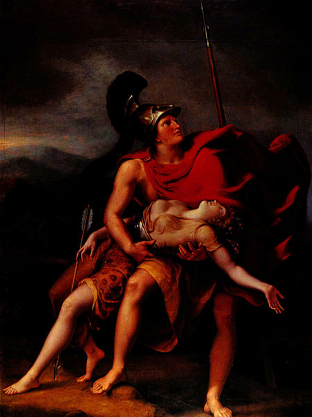

Sau khi Hector tử trận, thành Troie lâm vào một tình cảnh rất khó khăn. Thiếu hẳn một vị tướng có tài để có thể đương đầu với quân Hy Lạp. Chỉ còn mỗi cách là án binh bất động cố thủ trong thành. Trong tình hình nguy cấp ấy, bỗng đâu quân Troie được một đạo quân đến chi viện. Đó là đạo quân của nữ chiến sĩ Amazones do nữ hoàng Panthésilée chỉ huy. Từ vùng bờ biển Pont-Euxin, Panthésilée dẫn đoàn kỵ binh này đi tới đâu thì tưởng chừng như nơi ấy gò đống mấp mô biến thành đường đi bằng phẳng, đồng cỏ xanh mơn mởn chốc lát hóa xác xơ. Người xưa kể sở dĩ Panthésilée đứng về phía quân Troie vì quân Troie được nữ thần Artémis phù trợ. Nữ hoàng hy vọng bằng nghĩa cử này nữ thần Artémis sẽ vừa lòng mà tha thứ cho mình tội đã vô tình sát hại người chị ruột là nàng Hippolyte trong một cuộc đi săn. Có người kể, chính là đích thân lão vương Priam đã làm lễ rửa sạch tội sát nhân cho Panthésilée, và để đền ơn vị vua cai quản thành Troie, nàng kéo đạo quân Amazones xuống vùng đồng bằng Troade đọ sức với quân Hy Lạp.
Đạo quân của vị nữ hoàng Panthésilée, người con gái yêu của thần Chiến tranh-Arès, được lão vương Priam và nhân dân thành Troie đón tiếp rất trọng thể. Trong niềm hân hoan của tình chiến hữu, hội ngộ, Panthésilée đã kiêu căng nói rằng đạo quân Amazones của nàng sẽ quét sạch quân Hy Lạp khỏi vùng đồng bằng Troade, sẽ đốt sạch chiến thuyền của quân Hy Lạp.
Ngày hôm sau những nữ chiến sĩ Amazones xuất trận. Lão vương Priam làm lễ hiến tế cầu khấn thần linh ban cho đạo quân đồng minh của ông thắng lợi, nhưng các vị thần Olympe không chấp nhận lời cầu xin đó.
Cuộc chiến đấu diễn ra khá thuận lợi cho những nữ chiến sĩ Amazones. Với tài cưỡi ngựa bắn cung, phóng lao, các nữ chiến sĩ Amazones đã đánh đuổi quân Hy Lạp từ cửa thành Troie phải bỏ chạy về tận khu vực chiến lũy của mình. Thừa thắng, Panthésilée ra lệnh cho đội kỵ binh tiến công chọc thẳng vào khu vực chiến thuyền. Tình hình quả là cực kỳ nguy hiểm.
Đúng lúc ấy, Achille và Ajax Lớn xuất trận. Nguyên do là trong mấy ngày gần đây hai vị tướng này không tham chiến. Cả hai, ngày ngày đến ngồi bên nấm mồ nhỏ nhắn xinh đẹp bằng đá của Patrocle khóc than, nấm mồ đã được Achille chỉ dẫn cho những người Achéens xây đắp trong lễ hỏa thiêu Patrocle. Được biết tình hình chiến trận đã xấu đến như thế, hai dũng tướng lập tức mặc áo giáp, cầm vũ khí băng ngay ra chiến trường đánh chặn quân địch. Quân Amazones và quân Troie không thể nào địch nổi hai dũng tướng Hy Lạp có sức mạnh như hùm beo ấy. Từ tiến công họ bị chặn đứng lại rồi bị đẩy lùi ra ngoài khu vực chiến lũy của quân Hy Lạp. Nữ tướng Panthésilée thấy vậy bèn xông lên quyết đối mặt đương đầu với Achille. Nàng phóng liên tiếp hai ngọn lao về phía Achille nhưng không hạ được địch thủ. Một ngọn lao trúng chiếc khiên đồng nhưng không xuyên thủng được. Achille đánh trả. Chàng xông thẳng đến đâm một mũi lao trúng ngực Panthésilée. Nàng đưa tay ôm ngực, nhưng còn một tay cố thu hết sức lực còn lại rút thanh kiếm ở bên sườn ra, nhưng Achille lại bồi tiếp một mũi lao nữa vào con ngựa nàng đang cưỡi. Con ngựa đau đớn hất tung nàng từ trên lưng xuống đất rồi ngã vật ra giãy giụa. Achille liền xông đến để lột bộ áo giáp và tước đoạt vũ khí của nữ hoàng. Khi nâng vành mũ đồng che vầng trán và khuôn mặt của Panthésilée lên, chàng vô cùng xúc động trước vẻ đẹp lạ lùng của nữ hoàng, chàng vô cùng xót xa thương tiếc người đẹp sớm phải đón nhận một số phận bất hạnh. Trái tim chàng bâng khuâng như vừa đánh mất, để rơi một báu vật trong đời. Chàng đứng sững sờ, ngơ ngẩn hồi lâu, mắt rớm lệ, bên thi hài Panthésilée. Bỗng đâu Thersitès đến. Anh chàng có hình thù quái dị này, hẳn chúng ta còn nhớ, đã từng bị Ulysse đánh cho một trận nên thân trong Hội nghị vì tội láo xược. Chứng nào vẫn tật ấy, Thersitès thấy Achille xúc động trước cái chết của Panthésilée bèn cất lời chế nhạo:
- Này hỡi Achille! Ngài làm sao mà đứng tần ngần mãi bên cái xác của con giặc cái ấy? Hẳn rằng ngài tiếc cho mũi lao của ngài chứ gì? Giá mà người ta bắt sống được nàng và đem dâng cho ngài như đã dâng nàng Briséis thì có phải hay không? Hay ngài phải nhìn kỹ xem nàng đã chết thật hay chưa? Thôi được, như vậy để ta xin giúp một tay cho ngài yên tâm.

Achille giết chết nữ hoàng Panthésilée
Nói xong, Thersitès đâm một mũi lao nhọn vào giữa khuôn mặt xinh đẹp của Panthésilée làm bật hai con mắt của nàng ra ngoài. Hành động láo xược của tên lính quái dị này khiến cho Achille nổi cơn thịnh nộ. Chàng giáng cho hắn một trái đấm vào đầu. Hắn ngã vật xuống đất, vỡ sọ, chết thẳng cẳng. Dũng tướng Diomède, người có quan hệ huyết tộc gần gũi với Thersitès bất bình với Achille về chuyện này liền đem thi hài của Panthésilée vứt xuống sông Scamandre nhưng Achille tìm được, vớt lên và làm lễ tang trọng thể cho nàng.
Có chuyện kể Achille và quân Hy Lạp trao trả thi hài Panthésilée và mười hai nữ tù binh cho quân Amazones để những người Amazones làm lễ tang trọng thể cho vị nữ hoàng của họ. Cũng có chuyện kể khác đi một chút: Achille bắt sống được Panthésilée và cưới nàng làm vợ. Quanh cái chết của Thersitès cũng có chỗ kể hơi khác. Có chuyện kể Thersitès mưu đồ một cuộc phản nghịch, biến loạn, bị Ulysse phát hiện và giết chết.
Nói về Achille sau khi giết Thersitès, chàng phải được rửa tội, nếu không sẽ bị các nữ thần Érinyes truy đuổi trừng phạt. Achille vì thế phải trở về đảo Lesbos để dâng lễ vật lên nữ thần Léto, thần Apollon và nữ thần Artémis để cầu xin các thần tha tội, tẩy rửa sạch bàn tay ô uế đã nhuốm máu người. Tuân theo lời phán bảo của thần Apollon, dũng tướng Ulysse được lãnh sứ mạng rửa sạch tội sát nhân của Achille.